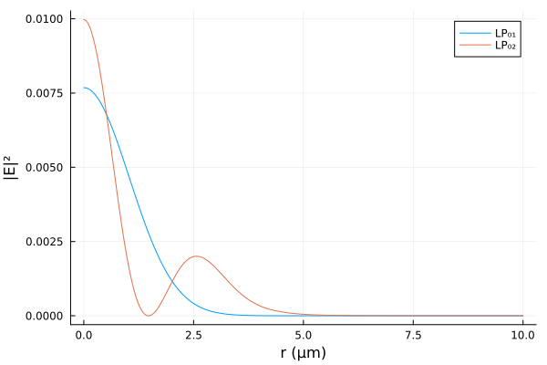

OpticalFibers.jl


OpticalFibers is a package that allows to compute modes of optical fibers. Different methods are implemented to find scalar or vector modes:
- A semi-analytical solver (based on Bessel functions) for multi-step index fibers.
- Finite element method (using
Gridap.jl) for any kind of isotropic or anisotropic fiber. A PML (Perfectly Matched Layer) is implemented to compute losses of leaky modes guided in trench-assisted fibers, PCF (Photonic Crystal Fibers), bent fiber, twisted fiber, etc. The FEM mode solver can also be used to find photonic bandgaps of a PCF cladding.
In order to specify units of physical quantities, this package uses Unitful.jl.
Installation
OpticalFibers requires at least julia 1.10 and can be installed with:
using Pkg
Pkg.add("OpticalFibers")Quickstart
Finding guided modes of a step-index fiber using the semi-analytical mode solver
Computation of the scalar fundamental mode LP$_{01}$ of a step index fiber with a core-radius of 2 µm, a refractive index of 1.47 for core and 1.45 for cladding at a wavelength of 1 µm:
julia> using OpticalFibers, OpticalFibers.ModeSolvers
julia> ms=multi_step_fiber_modes(1u"µm",0,2u"µm",[1.47,1.45],field=true)
1-element Vector{Mode{ScalarFiberEMField1D}}:
[LP 0,1 - neff = 1.463179347605715 - λ = 1 μm , EMField = ScalarFiberEMField1D]
julia> using Plots
julia> r=(0:0.1:7)u"µm"
julia> plot(r,abs.(ms[1].EMField.E.(r)),xlabel="r",ylabel="|E|",label="Fundamental Mode")
Computation of the fundamental vector mode HE$_{11}$ of the same fiber:
julia> mv=multi_step_fiber_modes(1u"µm",1,2u"µm",[1.47,1.45],type=:Vector)
1-element Vector{Mode}:
[HE 1,1,1.4631371608572663,1,Nothing]Finding guided modes of a graded-index fiber using the FEM mode solver
Computation of the scalar modes of a parabolic-index fiber with a core-radius of 4 µm, a refractive index of 1.48 for core center and 1.45 for cladding at a wavelength of 1 µm by using the finite element method with 1000 nodes between r=0 and r=20 µm:
julia> using OpticalFibers, OpticalFibers.ModeSolvers
julia> m=FEM1D(1u"µm",0,x->1.45+0.03*(1-x[1]^2/16u"µm^2")*(x[1]<=4u"µm"),CartesianDiscreteModel((0,20),1000)*u"µm",field=true,neigs=5)
2-element Vector{Mode{ScalarFiberEMField1D}}:
[Mode LP n°1 - neff = 1.4719806569716722 - λ = 1 μm , EMField = ScalarFiberEMField1D]
[Mode LP n°2 - neff = 1.4561502566055362 - λ = 1 μm , EMField = ScalarFiberEMField1D]
julia> using Plots
julia> r=(0:0.01:10)u"µm"
julia> plot(r,abs2.(m[1].EMField.E(r)),label="LP₀₁",xlabel="r",ylabel="|E|²")
julia> plot!(r,abs2.(m[2].EMField.E(r)),label="LP₀₂",xlabel="r",ylabel="|E|²")
Finding leaky modes of a step-index fiber with a trench using the FEM mode solver with a PML
Let us consider a step-index fiber with a trench:
- Core: radius 4 µm and refractive index 1.44
- Trench: thickness 16 µm and refractive index 1.41
- Cladding: refractive index 1.43
Computation of the guided modes $\ell=0$ without the cladding:
julia> m=multi_step_fiber_modes(1.6u"µm",0,4u"µm",[1.44,1.41])
2-element Vector{Mode{Nothing}}:
[LP 0,1 - neff = 1.4345691826486056 - λ = 1.6 μm , EMField = Nothing]
[LP 0,2 - neff = 1.4137165538840926 - λ = 1.6 μm , EMField = Nothing]Computation of the guided modes $\ell=0$ with the cladding:
julia> m2=multi_step_fiber_modes(1.6u"µm",0,[4,20]u"µm",[1.44,1.41,1.43])
1-element Vector{Mode{Nothing}}:
[LP 0,1 - neff = 1.4345691826495002 - λ = 1.6 μm , EMField = Nothing]We found only one mode because the LP₀₂ becomes leaky when adding the cladding.
To compute its losses, we can use the FEM solver with a PML:
julia> RIP_trench=x->1.44-0.03*(x[1]>=4u"µm")+0.02*(x[1]>20u"µm");
julia> model_trench = CartesianDiscreteModel((0,50),5000)*u"µm";
julia> ms1D_trench=FEM1D(1.6u"µm",0,RIP_trench,model_trench,field=true,dPML=5u"µm",approx_neff=m[2].neff)
1-element Vector{Mode{ScalarFiberEMField1D}}:
[Mode LP n°1 - neff = 1.4137165449018512 + 1.0825770569064243e-8im - λ = 1.6 μm , EMField = ScalarFiberEMField1D]
julia> ms1D_trench[1].losses
[369.2606344137047 dB] km^-1Losses of the LP₀₂ mode are 369 dB/km.
Finding bend losses using the FEM mode solver with a PML
Let us consider the step_index fiber described below:
- Core: radius 3.5 µm, refractive index 1.4457
- Cladding: refractive index 1.4378
Computation of the fundamental mode at $\lambda=1.55$ µm:
julia> ms_straight=multi_step_fiber_modes(1.55u"µm",0,3.5u"µm",[1.4457,1.4378])
1-element Vector{Mode}:
[LP 0,1 - neff = 1.4414392004035022 - λ = 1.55 μm , EMField = Nothing]To compute the fundamental mode when the fiber is bent, we need to use a 2D mesh generated with GMSH:
julia> model = GmshDiscreteModel("./models/example5.msh")
Info : Reading './models/example5.msh'...
Info : 10 entities
Info : 14768 nodes
Info : 29186 elements
Info : Done reading './models/example5.msh'
UnstructuredDiscreteModel()and to define the refractive index profile of the fiber bent with a radius of curvature of 10 mm:
julia> RIP2D=x->1.4457-(1.4457-1.4378)*(hypot(x[1],x[2])>=3.5u"µm");
julia> RIP2D_bent=x->RIP2D(x)*(1+x[1]/10u"mm");
julia> ms2D_bent=FEM2D(1.55u"µm",RIP2D_bent,model*u"µm",field=true,neigs=1,dPML=3u"µm",approx_neff=ms_straight[1].neff)
1-element Vector{Mode{ScalarFiberEMField2D}}:
[Mode LP n°1 - neff = 1.4414582242320717 + 1.5096368959603828e-9im - λ = 1.55 μm , EMField = ScalarFiberEMField2D]
julia> ms2D_bent[1].losses
[53.15388087039599 dB] km^-1In this case, the bend losses are 53 dB/km
Using MUMPS or CUDSS with Mode Solvers
The computation of modes of large microstructured fibers can take a long time (several minutes). It is possible to reduce this computation time by using the package MUMPS.jl or CUDSS.jl to speed up the LU decomposition. Note that support of CUDSS.jl is experimental because the iterative refinement tolerance is not yet implemented in CUDSS and the number of iterative refinement step has been arbitrarily set to 10. Using CUDSS requires a GPU with sufficient memory (and with good FP64 performance).
On windows, recent versions of MUMPS.jl do not work and it is recommended to use version 1.4.0:
using Pkg
julia> Pkg.add(name="MUMPS",version="1.4.0")
julia> Pkg.pin("MUMPS")The support of CUDSS.jl is restricted to version >=0.5.3
using Pkg
julia> Pkg.add(name="CUDSS",version="0.5.3")
julia> Pkg.pin("CUDSS")To compute the modes, the keyword solver must be used:
julia> using MUMPS
julia> ms2D_bent=FEM2D(1.55u"µm",RIP2D_bent,model*u"µm",field=true,neigs=1,dPML=3u"µm",approx_neff=ms_straight[1].neff,solver=:MUMPS)
1-element Vector{Mode{ScalarFiberEMField2D}}:
[Mode LP n°1 - neff = 1.4414582242320715 + 1.5096368959671403e-9im - λ = 1.55 μm , EMField = ScalarFiberEMField2D]
julia> using CUDSS
julia> ms2D_bent=FEM2D(1.55u"µm",RIP2D_bent,model*u"µm",field=true,neigs=1,dPML=3u"µm",approx_neff=ms_straight[1].neff,solver=:CUDSS)
1-element Vector{Mode{ScalarFiberEMField2D}}:
[Mode LP n°1 - neff = 1.4414582242320717 + 1.5096369002222508e-9im - λ = 1.55 μm , EMField = ScalarFiberEMField2D]Credits
OpticalFibers.jl is maintained by Olivier Vanvincq (University of Lille, PhLAM laboratory).